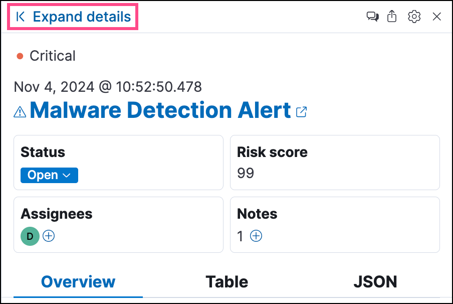

View detection alert detailsedit
To learn more about an alert, click the View details button from the Alerts table. This opens the alert details flyout, which helps you understand and manage the alert.
Use the alert details flyout to begin an investigation, open a case, or plan a response. Click Take action at the bottom of the flyout to find more options for interacting with the alert.
Alert details flyout UIedit
The alert details flyout has a right panel, a preview panel, and a left panel. Each panel provides a different perspective of the alert.
Right paneledit
The right panel provides an overview of the alert. Expand any of the collapsed sections to learn more about the alert. You can also hover over fields on the Overview and Table tabs to display available inline actions.
From the right panel, you can also:
- Click Expand details to open the left panel, which shows more information about sections in the right panel.
- Click the Chat icon () to access the AI Assistant.
-
Click the Share alert icon () to get a shareable alert URL. We do not recommend copying the URL from your browser’s address bar, which can lead to inconsistent results if you’ve set up filters or relative time ranges for the Alerts page.
If you’ve configured the
server.publicBaseUrlsetting in thekibana.ymlfile, the shareable URL is also in thekibana.alert.urlfield. You can find the field by searching forkibana.alert.urlon the Table tab.If you’ve enabled grouping on the Alerts page, the alert details flyout won’t open until you expand a collapsed group and select an individual alert.
-
Find basic details about the alert, such as the:
- Associated rule
- Alert status
- Date and time the alert was created
- Alert severity and risk score (these are inherited from rule that generated the alert)
- Users assigned to the alert (click the Assign alert icon to assign more users)
- Click the Table or JSON tabs to display the alert details in table or JSON format. In table format, alert details are displayed as field-value pairs.
Preview paneledit
The preview panel shows more information about the rule associated with the alert and the reason the alert was generated. This panel overlays the right panel when you click Show rule details or Show full reason in the About section. To close the preview panel, click x.
Left paneledit
The left panel provides an expanded view of what’s shown in the right panel. To open the left panel, do one of the following:
-
Click Expand details at the top of the right panel.
 -
Click one of the section titles on the Overview tab within the right panel.

Aboutedit
The About section is located on the Overview tab in the right panel. It provides a brief description of the rule that’s related to the alert and an explanation of what generated the alert.
The About section has the following information:
- Rule description: Describes the rule’s purpose or detection goals. Click Show rule summary to display more details about the rule within the preview panel. From the preview panel, click Show rule details to view the rule’s details page.
-
Alert reason: Describes the source event that generated the alert. Event details are displayed in plain text and ordered logically to provide context for the alert. Click Show full reason to display the alert reason in the event rendered format within the preview panel.
The event renderer only displays if an event renderer exists for the alert type. Fields are interactive; hover over them to access the available actions.
- Last alert status change: Shows the last time the alert’s status was changed, along with the user who changed it.
- MITRE ATT&CK: Provides relevant MITRE ATT&CK framework tactics, techniques, and sub-techniques.
Investigationedit
The Investigation section is located on the Overview tab in the right panel. It offers a couple of ways to begin investigating the alert.

The Investigation section provides the following information:
-
Investigation guide: The Show investigation guide button displays if the rule associated with the alert has an investigation guide. Click the button to open the expanded Investigation view in the left panel.
Add an investigation guide to a rule when creating a new custom rule or modifying an existing custom rule’s settings.
- Highlighted fields: Shows relevant fields for the alert and any custom highlighted fields you added to the rule.
Visualizationsedit
The Visualizations section is located on the Overview tab in the right panel. It offers a glimpse of the processes that led up to the alert and occurred after it.

Click Visualizations to display the following previews:
- Session view preview: Shows a preview of session view data. Click Session viewer preview to open the Session View tab in Timeline.
-
Analyzer preview: Shows a preview of the visual analyzer graph. The preview displays up to three levels of the analyzed event’s ancestors and up to three levels of the event’s descendants and children. The ellipses symbol (
...) indicates the event has more ancestors and descendants to examine. Click Analyzer preview to open the Event Analyzer tab in Timeline.
Insightsedit
The Insights section is located on the Overview tab in the right panel. It offers different perspectives from which you can assess the alert. Click Insights to display overviews for related entities, threat intelligence, correlated data, and host and user prevalence.

Entitiesedit
The Entities overview provides high-level details about the user and host that are related to the alert. Host and user risk classifications are also available with a Platinum subscription or higher.

Expanded entities viewedit
From the right panel, click Entities to open a detailed view of the host and user associated with the alert. The expanded view also includes risk scores and classifications (if you have a Platinum subscription or higher) and activity on related hosts and users.
Threat intelligenceedit
The Threat intelligence overview shows matched indicators, which provide threat intelligence relevant to the alert.

The Threat intelligence overview provides the following information:
- Threat match detected: Only available when examining an alert generated from an indicator match rule. Shows the number of matched indicators that are present in the alert document. Shows zero if there are no matched indicators or you’re examining an alert generated by another type of rule.
- Fields enriched with threat intelligence: Shows the number of matched indicators that are present on an alert that wasn’t generated from an indicator match rule. If none exist, the total number of matched indicators is zero.
Expanded threat intelligence viewedit
From the right panel, click Threat intelligence to open the expanded Threat intelligence view within the left panel.
The expanded threat intelligence view queries indices specified in the securitySolution:defaultThreatIndex advanced setting. Refer to Update default Elastic Security threat intelligence indices to learn more about threat intelligence indices.
The expanded Threat intelligence view shows individual indicators within the alert document. You can expand and collapse indicator details by clicking the arrow button at the end of the indicator label. Each indicator is labeled with values from the matched.field and matched.atomic fields and displays the threat intelligence provider.
Matched threats are organized into two sections, described below. Within each section, matched threats are shown in reverse chronological order, with the most recent at the top. All mapped fields are displayed for each matched threat.
Threat match detected
The Threat match detected section is only populated with indicator match details if you’re examining an alert that was generated from an indicator match rule. Indicator matches occur when alert field values match with threat intelligence data you’ve ingested.
Fields enriched with threat intelligence
Threat intelligence can also be found on alerts that weren’t generated from indicator match rules. To find this information, Elastic Security queries alert documents from the past 30 days and searches for fields that contain known threat intelligence. If any are found, they’re logged in this section.
Use the date time picker to modify the query time frame, which looks at the past 30 days by default. You can also click the Inspect button to examine the query that the Fields enriched with threat intelligence section uses.
When searching for threat intelligence, Elastic Security queries the alert document for the following fields:
-
file.hash.md5: The MD5 hash -
file.hash.sha1: The SHA1 hash -
file.hash.sha256: The SHA256 hash -
file.pe.imphash: Imports in a PE file -
file.elf.telfhash: Imports in an ELF file -
file.hash.ssdeep: The SSDEEP hash -
source.ip: The IP address of the source (IPv4 or IPv6) -
destination.ip: The event’s destination IP address -
url.full: The full URL of the event source -
registry.path: The full registry path, including the hive, key, and value
Correlationsedit
The Correlations overview shows how an alert is related to other alerts and offers ways to investigate related alerts. Use this information to quickly find patterns between alerts and then take action.

The Correlations overview provides the following information:
- Suppressed alerts: Indicates that the alert was created with alert suppression, and shows how many duplicate alerts were suppressed. This information only appears if alert suppression is enabled for the rule.
- Alerts related by source event: Shows the number of alerts that were created by the same source event.
- Cases related to the alert: Shows the number of cases to which the alert has been added.
- Alerts related by session ID: Shows the number of alerts generated by the same session.
-
Alerts related by process ancestry: Shows the number of alerts that are related by process events on the same linear branch.
To access data about alerts related by process ancestry, you must have a Platinum or higher subscription.
Expanded correlations viewedit
From the right panel, click Correlations to open the expanded Correlations view within the left panel.
In the expanded view, corelation data is organized into several tables:
-
Suppressed alerts: Shows how many duplicate alerts were suppressed. This information only appears if alert suppression is enabled for the rule.
This functionality is in technical preview and may be changed or removed in a future release. Elastic will work to fix any issues, but features in technical preview are not subject to the support SLA of official GA features.
- Related cases: Shows cases to which the alert has been added. Click a case’s name to open its details.
- Alerts related by source event: Shows alerts created by the same source event. This can help you find alerts with a shared origin and provide more context about the source event. Click the Investigate in timeline button to examine related alerts in Timeline.
- Alerts related by session: Shows alerts generated during the same session. These alerts share the same session ID, which is a unique ID for tracking a given Linux session. To use this feature, you must enable the Collect session data setting in your Elastic Defend integration policy. Refer to Enable Session View data for more information.
- Alerts related by ancestry: Shows alerts that are related by process events on the same linear branch. Note that alerts generated from processes on child or related branches are not shown. To further examine alerts, click Investigate in timeline.
Prevalenceedit
The Prevalence overview shows whether data from the alert was frequently observed on other host events from the last 30 days. Prevalence calculations use values from the alert’s highlighted fields. Highlighted field values that are observed on less than 10% of hosts in your environment are considered uncommon (not prevalent) and are listed individually in the Prevalence overview. Highlighted field values that are observed on more than 10% of hosts in your environment are considered common (prevalent) and are described as frequently observed in the Prevalence overview.
Expanded prevalence viewedit
From the right panel, click Prevalence to open the expanded Prevalence view within the left panel. Examine the table to understand the alert’s relationship with other alerts, events, users, and hosts.
Update the date time picker for the table to show data from a different time range.
The expanded Prevalence view provides the following details:
- Field: Shows highlighted fields for the alert and any custom highlighted fields that were added to the alert’s rule.
- Value: Shows values for highlighted fields and any custom highlighted fields that were added to the alert’s rule.
-
Alert count: Shows the total number of alert documents that have identical highlighted field values, including the alert you’re currently examining. For example, if the
host.namefield has an alert count of 5, that means there are five total alerts with the samehost.namevalue. The Alert count column only retrieves documents that contain theevent.kind:signalfield-value pair. -
Document count: Shows the total number of event documents that have identical field values. A dash (
——) displays if there are no event documents that match the field value. The Document count column only retrieves documents that don’t contain theevent.kind:signalfield-value pair.
The following features require a Platinum subscription or higher:
- Host prevalence: Shows the percentage of unique hosts that have identical field values. Host prevalence for highlighted fields is calculated by taking the number of unique hosts with identical highlighted field values and dividing that number by the total number of unique hosts in your environment.
- User prevalence: Shows the percentage of unique users that have identical highlighted field values. User prevalence for highlighted fields is calculated by taking the number of unique users with identical field values and dividing that number by the total number of unique users in your environment.
Responseedit
The Response section is located on the Overview tab in the right panel. It shows response actions that were added to the rule associated with the alert. Click Response to display the response action’s results in the left panel.